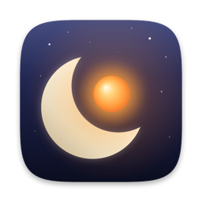
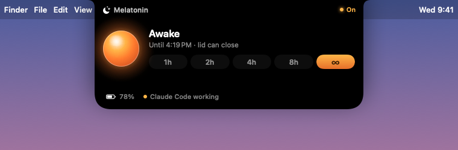
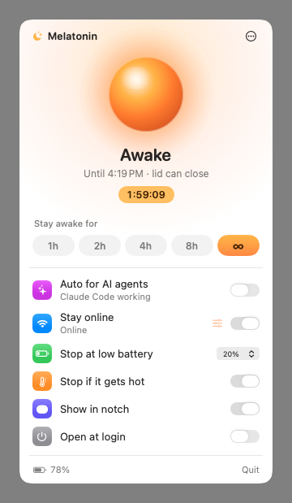
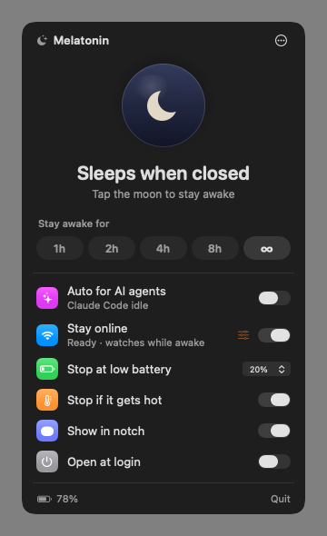
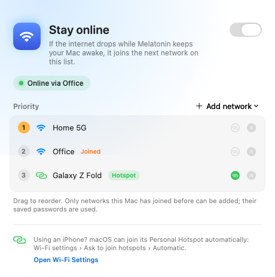

Melatonin keeps your MacBook awake with the lid closed — on battery, no external display — while Claude Code, Codex and friends finish their work.
Why another keep-awake app? Because the others stop working the moment you close the lid.
caffeinate, KeepingYouAwake and friends ask macOS nicely not to sleep. macOS ignores that request when the lid closes. The only switch that really holds is pmset disablesleep, and it needs root.
Melatonin wraps it in a tiny, auditable helper with safety rails, and puts the switch where you'll actually see it: in your notch.
A warm lamp glows beside the camera while your Mac is staying up, with the time left. Hover to expand. No notch? It hangs from the menu bar instead.




Start the task, close the lid, walk away.
Keep awake for 1, 2, 4 or 8 hours, or until you turn it off. From the notch or the menu bar.
Stays awake only while Claude Code, Codex, Hermes, OpenCode, T3 Code, Gemini CLI and others are actually working, judged by CPU activity.
Pick backup networks from your saved Wi-Fi and your phone's hotspot. If the internet drops, Melatonin joins the next one.
Lets your Mac sleep again at the battery level you choose, so a forgotten run never drains it flat.
Backs off if your Mac gets hot. A running laptop in a closed bag is how batteries get cooked.
If the app quits, crashes or is force-killed, the helper restores normal sleep immediately, and after reboots too.
Available in English, 한국어, 简体中文, 日本語, Español, Français, Deutsch, Português, Русский, العربية, हिन्दी and Bahasa Indonesia.
Melatonin.dmg, or with Homebrew:
brew install --cask jugol/tap/melatoninEarly builds aren't notarized by Apple yet, so macOS will stop the first launch. Open System Settings › Privacy & Security and click Open Anyway, or run:
xattr -dr com.apple.quarantine /Applications/Melatonin.appThe first time, macOS asks for your password once to install the helper. After that, it's one tap.